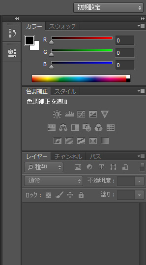
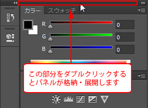
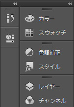
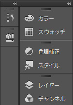
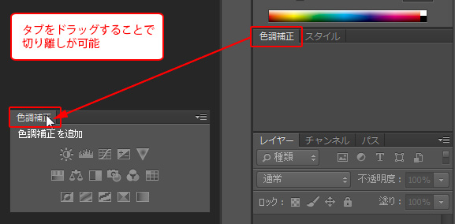
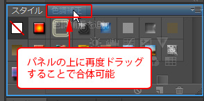
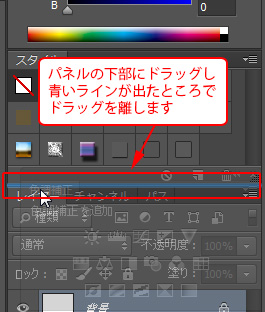
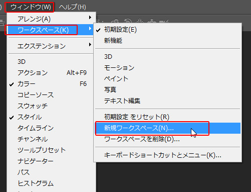
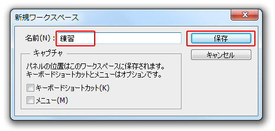
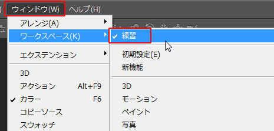

第2章 設定と基本操作
第3節 画面各部の名称
本項では、パネルの操作方法を学習します。
第2項 パネル
この項で学習する内容
- [パネル]の操作方法を習得する。
- ワークスペースの保存方法を習得する。
パネルの操作方法
パネルとは、メニューやツールから呼び出した機能の詳細設定をするためのウィンドウを指します。
初期状態のパネルは下図のように左右2列で、
折りたたまれたパネルと展開したパネルが並んでいます。

パネル最上部の黒いバー[パネルタイトルバー]をダブルクリックすることで、
パネルを一時的に格納したり展開することができます。
 

また各パネルは「タブ」をクリックすることで切り替えることが可能です。
「タブ」をパネル外にドラッグすることで分離することができます。

さらに分離したパネルは再びパネル上にドラッグすることで戻すことも可能です。

また、パネルを下図のように上下につなげてグループ化させることもできます。

ワークスペースについて
ワークスペースとは各種ツールやパネルの並び、組み合わせを記憶する機能のことを指します。
たとえば、上で行った操作でパネルがバラバラになってしまった場合も
ワークスペースを活用することで初期設定状態にすぐに戻すことができますし、
自分好みに並び替えたパネルの状態を保存することも可能です。
ワークスペースの設定は[ウィンドウ]メニューから行うことができます。
現在のパネルの状態を保存してみましょう。
メニューバーの[ウィンドウ]-[ワークスペース]-[新規ワークスペース]をクリックします。

ここでは「練習」と名前を付けて、それ以外の設定は変えずに保存します。

保存ができたら、メニューバーの[ウィンドウ]-[ワークスペース]から「初期設定」を選択し、
再度[ウィンドウ]-[ワークスペース]から[初期設定をリセット]を選択すると
バラバラだったパネルがフォトショップを最初に開いた状態に戻ります。
初期状態に戻ったら今度は先ほど保存したワークスペース「練習」を呼び出します。
メニューバーの[ウィンドウ]-[ワークスペース]を選択し、
一番上にある「練習」をクリックします。

これで先ほど保存したパネルの並びに戻りました。
最後にこの「練習」のワークスペースを削除します。
※削除したいワークスペースを選択したままの状態では削除ができません。
[初期設定]など他のワークスペースを選択してから削除を試してください。
メニューバーの[ウィンドウ]-[ワークスペース]を選択し、
「ワークスペースを削除」をクリックします。
開いたウィンドウから「練習」のワークスペースを選択して削除しましょう。
このように、よく使うパネルを自分好みの配置に変更し
ワークスペースとして保存することで作業効率を上げることができます。
ワンポイント
誤って閉じてしまったパネルはすべて、[ウィンドウ]メニューから呼び出せます。
また、ワークスペースを初期状態に戻したい場合は、
メニューバーの[ウィンドウ]-[ワークスペース]-[○○のリセット]を選択します。
※「○○」には選択中のワークスペース名が入ります。
この項のまとめ
- パネルとワークスペース
- ・各種パネルは場所や組み合わせを自由に変更できる。
・変更したパネルの配置をワークスペースとして保存することができる。 - ワークスペースの操作方法
- ・メニューバーの[ウィンドウ]-[ワークスペース]-[新規ワークスペース]で名前を付けて保存できる。
・保存したワークスペースは、メニューバーの[ウィンドウ]-[ワークスペース]から呼び出しできる。
・ワークスペースを初期状態に戻したい場合は、メニューバーの[ウィンドウ]-[ワークスペース]-[○○のリセット]を選択（○○にはワークスペース名が入る）。
引き続きこのファイルを使用します。
ファイルは閉じずに次の項へ進んでください。